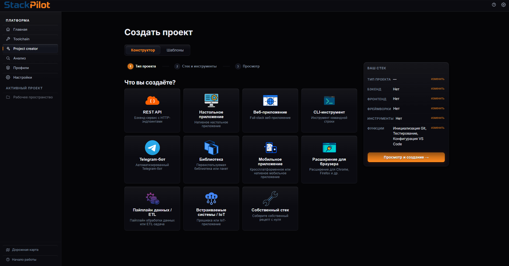

Меньше рутины.
Больше кода.
От идеи до готового каркаса проекта за 10 минут. StackPilot автоматически установит инструменты, настроит Docker, сгенерирует файлы и запустит весь стек одной кнопкой.
Бесплатно. Open-source. Локально.

Всё необходимое в одном приложении
StackPilot заменяет десятки разрозненных скриптов и ручных установок.
Контроль окружения
Автоматически проверяет, скачивает и устанавливает нужные версии Python, Node.js, Git, Docker.
Генерация каркасов
Собирайте стек как конструктор. Приложение само создаст файлы, docker-compose, зависимости и .env.
Запуск одной кнопкой
Сложные сценарии запуска (БД, бекенд, фронтенд, IDE, браузер) выполняются в правильном порядке по клику.
Рабочее пространство
Единая панель для мониторинга процессов, логов контейнеров и быстрого доступа к файлам проекта.
Как создать проект мечты
Выберите технологии
В визуальном конструкторе выберите язык, бекенд, фронтенд и БД. Умная система подскажет несовместимости.
StackPilot всё настроит
Программа сама скачает недостающее ПО через официальные каналы (winget/apt) и сгенерирует файлы проекта.
Нажмите Run
База данных поднимается в Docker, сервер стартует, фронт собирается, открывается VS Code и браузер. Вы можете писать код.
Например, ваш стек:
> Генерация структуры: OK
> Настройка docker-compose: OK
> Запуск контейнеров...
> Проект успешно запущен.
Сделано разработчиком для разработчиков
Готов начать экономить часы?
Скачай StackPilot бесплатно прямо сейчас. Доступно для Windows (поддержка Linux и macOS в разработке).
Скачать инсталлятор (.msi)Лицензия AGPL-3.0 • Репозиторий открыт